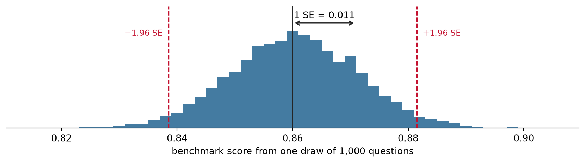
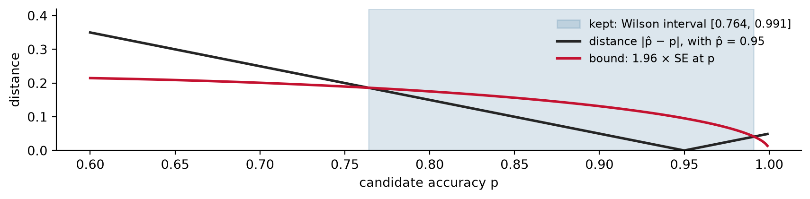
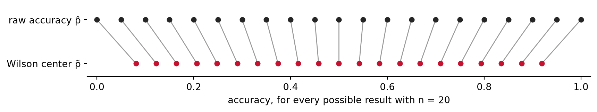
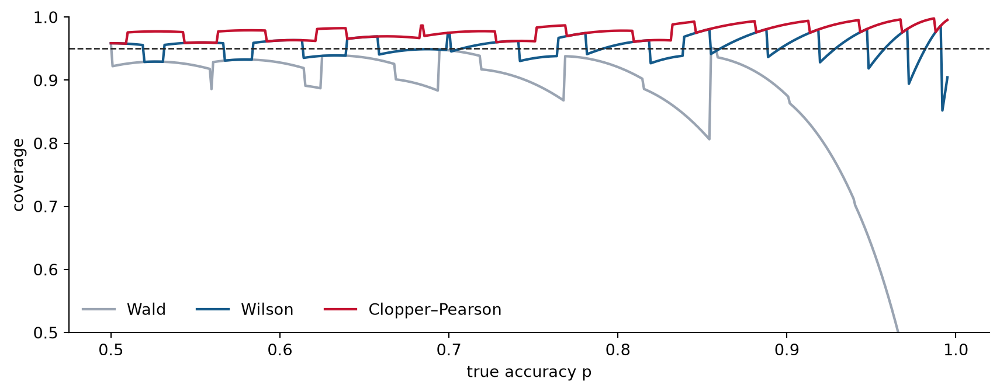
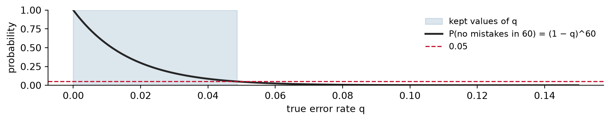

Week 4A: How Precise Is a Benchmark Score?
Benchmarks have uncertainty
Shannon Gallagher
Recap: Week 3 designed the evaluation
- We turned “is the AI better?” into an estimand, a comparison, a data split, and a decision rule.
- The plan ends with a number: an accuracy on held-out cases.
Today: how much should anyone trust that number?
A leaderboard
| Model | Accuracy on 1,000 test questions |
|---|---|
| Model A | 86.4% |
| Model B | 85.9% |
“Model A is better.” Is it?
Discuss with a neighbor: what else would you need to know before deciding?
Each score has a standard error
If the 1,000 questions are a random sample of questions, each score has a standard error:
\operatorname{SE}(\hat p) = \sqrt{\frac{\hat p(1-\hat p)}{n}} = \sqrt{\frac{0.864 \times 0.136}{1000}} = 0.011,
about 1.1 percentage points. A 95% interval is about \pm 2.1 points around each score.
The gap between the models, 0.5 points, is less than half of one standard error.
Today is about the precision of one score.
Comparing two models properly needs paired methods, because both answered the same questions. That is Week 5.
A benchmark is a sample
- The benchmark score is a statistic: a function of the data, here the test questions and the system’s answers to them.
- In regression, we usually treat the inputs X as fixed and study how Y varies given X.
- In a benchmark, the test questions are the X’s, and they are not fixed: they are a sample from a population of questions.
- So the score’s sampling distribution comes from which questions were drawn. A different sample of questions would give a different score, and the standard error is the spread of those scores.
- The score estimates the system’s accuracy on the population of questions the benchmark is meant to represent.
Today’s source of variation: which questions landed in the test set.
Other sources come later in the course: disputed labels (Week 2), random variation in model outputs, and a benchmark population that differs from yours (Week 9).
A score’s sampling distribution
Suppose a model’s true accuracy is 0.86. Draw 5,000 benchmarks of 1,000 questions each and score the model on each.
The standard deviation of these scores is 0.011: that is the standard error, and it matches \sqrt{0.86 \times 0.14 / 1000}. About 95% of scores land within \pm 1.96 standard errors of the truth (dashed lines), though the full range is about \pm 4.
Not to be confused with \sigma = \sqrt{p(1-p)} \approx 0.35, the standard deviation of one question’s 0/1 outcome. The standard error is \sigma/\sqrt{n}.
Same idea, two vocabularies
| In statistics | In ML papers | What it means |
|---|---|---|
| standard error | “uncertainty,” “\pm” after a score | how much the score would change with a different sample of test items |
| 95% confidence interval | error bars, if they span about \pm 1.96 standard errors | a range from a procedure that captures the true accuracy in 95% of repeated samples |
| sampling distribution | variation across test sets or runs | all the scores we could have gotten |
Error bars are not always 95% intervals. In ML papers they may show
- \pm 1 standard deviation across training runs,
- \pm 1 standard error, which covers only about 68% for a roughly normal estimate, or
- a 95% confidence interval.
When you read “error bars,” always ask: error bars for what, and how wide?
A false friend: the model’s “confidence”
For one photo, MegaDetector reports a confidence of 0.87 that an animal is present. That is the word ML uses for this number.
- That is a predicted probability for one photo: how sure the model is that an animal is present.
- Statistical confidence is about the benchmark score: how precisely we know the model’s accuracy across photos.
The two are unrelated. A model can be “99% confident” on every photo while its accuracy is known only roughly, because it was tested on just 20 photos.
Whether a model’s confidence values mean what they say is a separate question, calibration, in Week 6.
Error bars in AI evaluations
- Many leaderboards report a single number, with no error bars.
- When AI papers do show error bars, they often come from retraining or rerunning with different random seeds. That measures how much the score changes from run to run, not how much it would change with a different sample of test questions.
- Miller (2024), “Adding Error Bars to Evals,” argues that eval scores should come with standard errors. It treats test questions as drawn from an unseen super-population, uses clustered standard errors when questions share a passage (Thursday), and compares models with paired differences (Week 5).
Discuss: a team reports 86.4% \pm 0.3% across five random seeds on a 1,000-question benchmark. What does the \pm 0.3% leave out?
Our running example: the wildlife team
- Motion-triggered cameras take a burst of three photos, a sequence, whenever something moves.
- A team is considering MegaDetector to sort the photos. Photos it calls empty may never be looked at.
- The costly mistake is calling a photo empty when an animal is there.
The team’s two questions:
- How often is MegaDetector right on photos like ours?
- How sure can we be about that number?

Frame 1 of 3 in one burst. MegaDetector gives this photo a 0.98 probability of an animal.
Many benchmark scores are an accuracy
Let Y_i = 1 if the system gets item i right and 0 if not. The score is
\hat p = \frac{1}{n}\sum_{i=1}^n Y_i = \frac{k}{n},
the share of the n items it gets right.
- An accuracy is an average of 0/1 outcomes, so it is an estimated proportion.
- If items are independent and each is right with the same probability p, then k \sim \operatorname{Binomial}(n, p), and \hat p estimates p. In Week 1 this was the Bernoulli MLE.
So “how precise is the benchmark score?” becomes “how precise is an estimated proportion?”
Exploratory data analysis: which population?
An interval around the wildlife team’s accuracy could describe:
- more photos from the same sequences;
- more sequences at the same cameras;
- photos from other cameras like these;
- cameras the team will put out next year.
These are different populations with different amounts of uncertainty. An interval is only as good as the sampling story behind it.
Which interval do we choose?
Once we know which population the score describes, we still have to choose how to build the interval. Several methods give a “95% interval” for an accuracy. We compare three:
- Wald, the textbook normal approximation;
- Wilson, which judges each candidate accuracy by its own standard error;
- Clopper–Pearson, the exact interval built from the binomial.
We judge them on two things:
- Does it keep its promise? A 95% interval should contain the true accuracy about 95% of the time.
- How wide is it? A narrower interval is more useful, as long as it keeps the promise.
Wald: the normal approximation
By the central limit theorem, when n is large,
\hat p \;\approx\; N\!\left(p,\ \frac{p(1-p)}{n}\right).
We do not know p, so the Wald interval plugs in \hat p for p in the standard error:
\operatorname{SE}(\hat p) \approx \sqrt{\frac{\hat p(1-\hat p)}{n}}, \qquad \hat p \pm z\,\operatorname{SE}(\hat p),
where z = z_{0.975} = 1.96 for a 95% interval.
For Model A: 0.864 \pm 1.96 \times 0.0108 = 0.864 \pm 0.021.
The normal approximation works well when n is large and \hat p is not near 0 or 1. Benchmarks for good AI systems often have \hat p near 1, and subgroups often have small n.
Check: the standard error
A benchmark has 400 questions, and a model gets 80% right.
- What is the standard error of its score?
- What is the 95% Wald interval?
- How many questions would you need to cut the standard error in half?
Wald near the boundary
Suppose a system gets 19 of 20 right, so \hat p = 0.95 and \operatorname{SE} = 0.049:
0.95 \pm 0.096 = [0.854,\ 1.046].
Three problems:
- It can go past 1 (or below 0).
- With zero errors, \operatorname{SE} = 0 and the interval collapses to a single point.
- It covers the truth less often than it claims.
Near the boundary, the sampling distribution of \hat p is lopsided, but the Wald interval is symmetric.
Wilson: judge each p by its own standard error
Keep every candidate accuracy p with \;|\hat p - p| \le z\sqrt{p(1-p)/n}, using the standard error at p.

19 of 20 correct. Black: distance from \hat p = 0.95 to each p. Red: the bound, 1.96 SE at that p. Wilson keeps p where black is below red; the endpoints are where they cross.
In HW4 Problem 1 you derive the interval from this bound.
Wilson for 19 of 20
| Center | \pm term | Interval | |
|---|---|---|---|
| Wald | 0.950 | 0.096 | [0.854, 1.046] |
| Wilson | 0.878 | 0.114 | [0.764, 0.991] |
The Wilson center moved toward 1/2, and the interval stays inside [0, 1].
Shrinkage: the Wilson center pulls toward 1/2
The Wilson center is a weighted average of \hat p and 1/2, with w_1 = n/(n+z^2) and w_2 = z^2/(n+z^2): \tilde p = w_1\,\hat p + w_2\cdot\tfrac12. An estimator that pulls raw estimates toward a central value is a shrinkage estimator.

Why shrink? 20 of 20 correct gives \hat p = 1, but 20 photos cannot show a model is perfect. Shrinking gives up a little bias for less variance.
How strong is the pull toward 1/2?
The weight on 1/2 is w_2 = z^2/(n + z^2):
| n | Weight on 1/2 |
|---|---|
| 20 | 0.161 |
| 100 | 0.037 |
| 1,000 | 0.004 |
Small samples are pulled a lot, and large samples barely at all. When data are scarce, the estimate leans on the central value. When data are plentiful, the data speak for themselves. In HW4 you show the pull vanishes as n grows.
Shrinkage returns in the project. Per-class accuracies from small classes are noisy, and shrinking them toward the overall accuracy is often better than reporting each one raw.
An aside: adding imaginary photos
With z = 1.96, the Wilson center is \;\tilde p = \dfrac{k + 1.92}{n + 3.84}.
- Numerator: + 1.92, about 2 correct photos.
- Denominator: + 3.84, about 4 photos in all (2 correct, 2 incorrect).
Other estimators add different amounts:
| Add before counting | Estimate for 19 of 20 | Name |
|---|---|---|
| nothing | 19/20 = 0.950 | the usual accuracy |
| ½ correct, ½ incorrect | 19.5/21 = 0.929 | Jeffreys |
| 1 correct, 1 incorrect | 20/22 = 0.909 | Laplace’s rule of succession |
| 1.92 correct, 1.92 incorrect | 20.92/23.84 = 0.878 | Wilson center = Agresti–Coull center |
| 2 correct, 2 incorrect | 21/24 = 0.875 | “plus four” (Wilson, rounded) |
If you have seen Bayesian statistics, each row is a Bayes estimator. The connection stops at the center. The Wilson interval is not a Bayesian interval, because it comes from inverting a frequentist test.
Clopper–Pearson: the exact interval
- Built directly from the binomial: keep every p under which seeing k correct would not be too surprising, with at most 2.5% in each tail.
- No normal approximation.
- Guaranteed to cover the truth at least 95% of the time, for every p.
- The cost: it is conservative, so it is usually wider.
| 19 of 20 | Interval |
|---|---|
| Wilson | [0.764, 0.991] |
| Clopper–Pearson | [0.751, 0.999] |
In code: proportion_confint(k, n, method="beta").
What “95%” promises
A 95% interval method should contain the true accuracy in about 95% of repeated test sets.
For a binomial count we can compute that coverage exactly, for every possible true accuracy p: add up the probabilities of the counts k whose interval contains p.
Coverage when n = 20

Wald often falls far below 95%, especially near 1. Wilson wiggles around 95%. Clopper–Pearson never drops below 95%.
Why the waves? With n = 20 there are only 21 possible results, so only 21 possible intervals. As p slides along, coverage drops suddenly each time p crosses one of their endpoints, then drifts as the binomial probabilities shift.
What a 95% interval does and does not mean
It does mean: the procedure that built it captures the true accuracy in about 95% of repeated samples of test items.
It does not mean:
- there is a 95% probability that the true accuracy is inside this particular interval (once computed, the interval either contains it or does not);
- that 95% of photos, or 95% of model runs, fall inside it;
- anything about problems the sample cannot see, like disputed labels, leakage, or a different population.
Which interval should the team report?
| Coverage | Width | |
|---|---|---|
| Wald | can be far too low near 0 or 1 | narrowest, but misleading |
| Wilson | close to 95% on average | moderate |
| Clopper–Pearson | at least 95% | widest |
There is no universal answer. A guarantee matters most when an overconfident claim is costly, for example before the team stops checking photos the model calls empty.
In HW4 you make this call for the wildlife team.
When the model makes no mistakes
No mistakes on 60 independent photos. With true error rate q, which values of q are still believable?
Try it: use the binomial to write P(\text{no mistakes}) as a function of q.
The number of mistakes is K \sim \operatorname{Binomial}(60, q), so \;P(K = 0) = \binom{60}{0} q^0 (1-q)^{60} = (1-q)^{60}.
Keep every q under which seeing no mistakes is not too surprising, P(K = 0) \ge 0.05.

Solving for the bound
Try it: find the largest q with (1-q)^{60} \ge 0.05.
The bound is where the curve crosses 0.05: (1-q)^{60} = 0.05 \quad\Longrightarrow\quad q = 1 - 0.05^{1/60} = 0.049.
- This is the one-sided Clopper–Pearson bound when there are no errors.
- The rule of three approximates it by 3/n = 3/60 = 0.050. In HW4 you show why.
“No mistakes” means “the error rate is probably below about 5%,” not “the error rate is 0.”
Better systems are harder to verify
To show the error rate is below a target q_0, the rule of three needs 3/n < q_0, so n > 3/q_0 error-free photos.
| To show the error rate is below | Error-free, independent photos needed |
|---|---|
| 10% | 30 |
| 2% | 150 |
| 0.5% | 600 |
| 0.05% | 6,000 |
- Every 10-fold stronger claim needs 10 times the data.
- A better system makes fewer mistakes, so backing up its claim takes more data, not less.
- These counts assume independent photos. With bursts of three, the team needs even more (Lecture B).
Self-driving cars face the same arithmetic. Kalra and Paddock (RAND, 2016) estimated that showing a fatality rate better than human drivers would take hundreds of millions of miles of driving.
Check
A sorting model makes no mistakes on 120 independent photos.
- Give a rough 95% upper bound on its error rate.
- A manager says, “It never makes mistakes.” What would you tell them?
- On another set, the model gets 112 of 120 right. Which interval would you report, and why?
One assumption we have not questioned
Every interval today assumed the items are independent.
Camera traps take bursts of three nearly identical photos. Are those three pieces of evidence, or closer to one?
Thursday: what happens when benchmark items come in clusters.
What we did today
- A benchmark’s test questions are a sample, so its score changes from sample to sample: it has a sampling distribution and a standard error.
- “Uncertainty,” “error bars,” and “confidence” mean different things in statistics and ML. Ask what source of variation they measure.
- Many benchmark scores are accuracies, so the question becomes how precise an estimated proportion is.
- Wald breaks near 0 and 1. Wilson judges each p by its own standard error and shrinks toward 1/2. Clopper–Pearson guarantees coverage but is wider.
- Zero mistakes still leaves an upper bound of about 3/n, so the better the system, the more data it takes to verify.
- All of these assume independent items.
Reading: Miller (2024), “Adding Error Bars to Evals”, Sections 1–2. Section 2.2 previews Thursday.